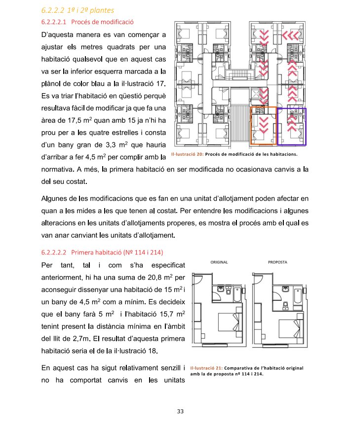

Reforma Hotel Estel
Estudi de viabilitat normativa i redisseny de plànols arquitectònics per elevar la categoria d'un hotel de 2 a 4 estrelles.
Auditar tota la normativa turística vigent per transformar un edifici existent sense comprometre'n l'estructura principal.
El projecte parteix d'una anàlisi exhaustiva dels requisits legals de superfícies, accessibilitat i serveis per assolir la categoria de quatre estrelles. A partir d'aquests criteris tècnics, es replanteja íntegrament la distribució interior en planta.
Redistribució en planta i compliment normatiu
S'han recalculat les dimensions mínimes d'habitacions, els radis de gir adaptats als banys, l'ampliació de les zones comunes i la integració d'un nou nucli d'ascensor respectant els murs de càrrega originals.

Càlcul de superfícies i comparativa d'habitacions
Mitjançant delineació en AutoCAD i l'aplicació estricta de la normativa turística de 4 estrelles, es va replantejar cada unitat d'allotjament fins a garantir els mínims legals d'habitació (15 m²), bany (4,5 m²) i accessibilitat.
Treball de Recerca qualificat amb un 10 / 10 pel tribunal de Batxillerat, reconeixent el detall tècnic de delineació en AutoCAD i el rigor normatiu aplicat al cas real.